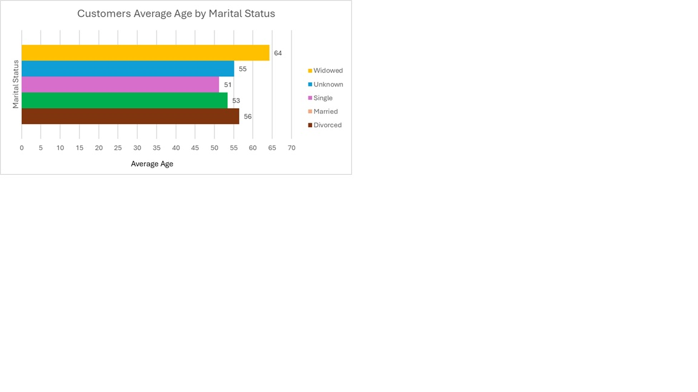
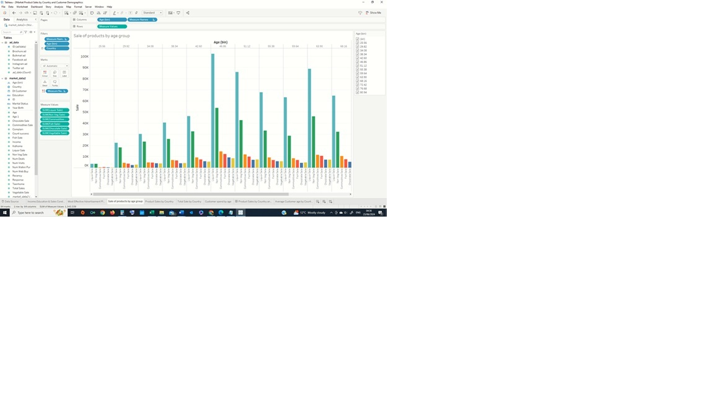
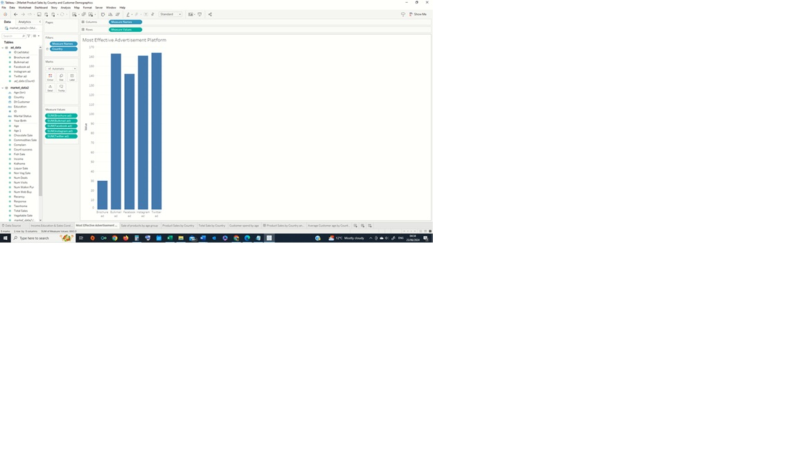

Exploratory Data Analysis for 2Market
Overview:
2Market, a global supermarket, conducted a customer sales and marketing
review which revealed a significantly lower online purchases via
different social media platforms compared to their in-store sales. With
the goal of increasing online revenue and improving lead conversion
rates, I was tasked with analysing customers’ purchasing behaviour,
demographics, and effectiveness of various advertising channels. I
conducted a descriptive and diagnostic analysis of the supermarket’s
marketing and social media advertising data. The analysis focused on
identifying high-performing product categories, preferred platforms
across demographics, and regional purchasing trends.
Based on the gathered insights, I was able to make the following
recommendations:
- To boost online sales and lead conversions, supermarket sales department should target customers aged 50–65 in Spain, Saudi Arabia, and Canada via Twitter, Instagram, and Bulk Mail.
- The campaigns should focus on promoting liquor and non-vegetable products—categories most aligned with the purchasing patterns of this segment.
Approach:
For this project Excel, SQL, PgAdmin and Tableau were used.
- Data Cleaning & Processing: Prior to conducting Exploratory Data Analysis, the data was cleaned and pre-processed using Excel functions and filters to remove any outliers and blank spaces. For data integrity, the data was checked for duplicates, spelling errors and name inconsistencies.
- Exploratory Analysis: Descriptive statistical analysis and Pivot Table in Microsoft Excel and advanced SQL queries in PgAdmin were run to explore customer demographics, their purchase behaviour and ad platform effectiveness. Here is an example of a SQL code I used:
The total spend per product per country
SELECT "country",
SUM(m."liquor_sale") AS total_liqour_sales,
SUM(m."fish_sale") AS total_fish_sales,
SUM(m."veg_sale") AS total_veg_sales,
SUM(m."nonveg_sale") AS total_non_veg_sales,
SUM(m."choc_sale") AS total_chocolate_sales,
SUM(m."comm_sale") AS total_commodities_sales
FROM public.marketing_data m
GROUP BY "country"
ORDER BY "country" DESC;
Key Insights:
- Customer Demographics: The average customer age is 54, with spending patterns varying by age and income as seen in the figure below.
- Sales Trends: Liquor is the best-selling item across all demographics and regions.
- Advertising Effectiveness: Twitter, Instagram, and Bulk Mail are the most successful ad platforms.
- Regional Insights: Spain recorded the highest total sales, while households with fewer children spent more on groceries.



For a complete picture, please click on the links below and feel free to peruse my report, and view my complete SQL code and Tableau Dadshboard.